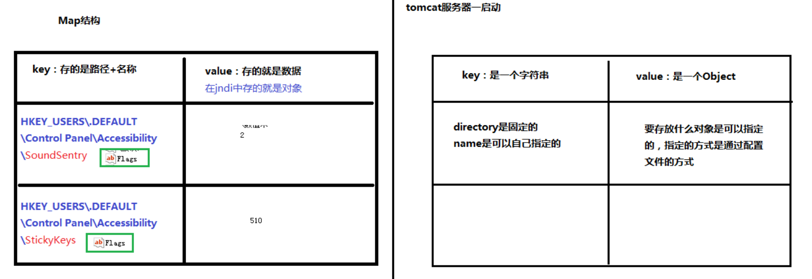

一、mybatis连接池
- 连接池：
- 概念：连接池就是用于存储连接的一个容器
- 容器其实就是一个集合对象，该集合必须是线程安全的，不能两个线程拿到同一连接
- 该集合还必须实现队列的特性：先进先出
- mybatis中的连接池：
- mybatis连接池提供了3中方式的配置：
- 配置的位置：
- 主配置文件SqlMapConfig.xml中的dataSource，type属性就是表示采用何种连接池方式
- type属性的取值：
- POOLED-------采用传统的javax.sql.DataSource规范中的连接池，mybatis中有针对规范的实现，使用了池的思想

- UNPOOLED----采用传统的获取连接的方式，虽然也实现了javax.sql.DataSource接口，但是并没有使用池的思想
- JNDI------------采用服务器提供的JNDI技术实现，来获取DataSource对象，不同的服务器所能拿到的DataSource是不一样的
- 注意：如果不是web或者maven的war工程，是不能使用的
二、mybatis中的事务
- 什么是事务
- 事务的四大特性ACID
- 原子性
- 持久性
- 隔离性
- 一致性
- 不考虑隔离性会产生的3个问题
- 脏读
- 不可重复读
- 幻读
- 四种隔离级别
- read uncommitted:读未提交
- read committed:读已提交
- repeatable read:可重复读
- serializable：可以解决所有问题（串行化）
三、动态SQL
<if>标签示例：
<select id="findByCondition" resultMap="userMap" parameterType="user">
<include refid="defaultSql"></include>
<where>
<if test="userName != null">
and username like #{userName}
</if>
</where>
</select>
<foreach>标签示例：
<select id="findById" resultMap="userMap" parameterType="queryvo">
<include refid="defaultSql"></include>
<where>
<if test="ids != null and ids.size() > 0">
<foreach collection="ids" open="id in (" close=")" item="id" separator=",">
#{id}
</foreach>
</if>
</where>
</select>
四、多表查询
- 一对一关系映射，从表实体应该包含一个主表实体的对象引用
- 一对一查询
<!--定义封装account和user的resultMap-->
<resultMap id="accountUserMap" type="account">
<id property="id" column="aid"></id>
<result property="money" column="money"></result>
<result property="uid" column="uid"></result>
<!--一对一关心映射，配置封装user内容(其中column属性是通过哪个键获取的user数据)-->
<association property="user" column="uid" javaType="com.vaught.domain.User">
<id property="id" column="id"></id>
<result property="username" column="username"></result>
<result property="birthday" column="birthday"></result>
<result property="sex" column="sex"></result>
<result property="address" column="address"></result>
</association>
</resultMap>
<select id="findAll" resultMap="accountUserMap">
select u.*,a.id as aid,a.uid,a.money from user as u,account as a where a.uid = u.id;
</select>
- 一对多关系映射，主表实体应该包含从表实体的集合引用
<resultMap id="userAccountMap" type="user">
<id column="id" property="id"></id>
<result property="username" column="username"></result>
<result property="birthday" column="birthday"></result>
<result property="sex" column="sex"></result>
<result property="address" column="address"></result>
<collection property="accounts" ofType="account">
<id property="id" column="aid"></id>
<result property="uid" column="uid"></result>
<result property="money" column="money"></result>
</collection>
</resultMap>
<!-- 查询所有 -->
<select id="findAll" resultMap="userAccountMap">
select u.*,a.id as aid,a.uid,a.money from user u left join account a on u.id=a.uid;
</select>
- 多对多关系映射，可以看做一对多
- 需要使用中间表，中间表包含各个主键，在中间表中是外键
- 建立两个实体类
UserDao配置
<resultMap id="userAccountMap" type="user">
<id column="id" property="id"></id>
<result property="username" column="username"></result>
<result property="birthday" column="birthday"></result>
<result property="sex" column="sex"></result>
<result property="address" column="address"></result>
<collection property="roles" ofType="role">
<id property="roleId" column="rid"></id>
<result property="roleName" column="role_name"></result>
<result property="roleDesc" column="role_desc"></result>
</collection>
</resultMap>
<!-- 查询所有 -->
<select id="findAll" resultMap="userAccountMap">
select * from user as u
left join user_role as ur on u.id=ur.uid
LEFT join role as r on r.id=ur.rid;
</select>
RoleDao配置
<resultMap id="roleMap" type="role">
<id property="roleId" column="id"></id>
<result property="roleName" column="role_name"></result>
<result property="roleDesc" column="role_desc"></result>
<collection property="users" ofType="user">
<id property="id" column="id"></id>
<result property="username" column="username"></result>
<result property="birthday" column="birthday"></result>
<result property="sex" column="sex"></result>
<result property="address" column="address"></result>
</collection>
</resultMap>
<select id="findAll" resultMap="roleMap">
select u.*,r.id as rid,r.role_name,r.role_desc from role as r
left outer join user_role ur on r.id=ur.rid
left outer join user u on u.id=ur.uid;
</select>
五、JNDI
- Java Naming and Directory Interface。是SUN公司推出的一套规范，属于JavaEE技术之一。目的是模仿windows系统中的注册表。
- 
六、延迟加载和立即加载
- 就是在需要用到数据时才进行加载，不需要用到数据时就不加载数据。延迟加载也称懒加载.

- 好处：先从单表查询，需要时再从关联表去关联查询，大大提高数据库性能，因为查询单表要比关联查询多张表速度要快。
- 坏处：因为只有当需要用到数据时，才会进行数据库查询，这样在大批量数据查询时，因为查询工作也要消耗时间，所以可能造成用户等待时间变长，造成用户体验下降。
- 在四种表关系中：
- 一对多，多对多：通常情况下我们都是采用延迟加载
- 多对一，一对一：通常情况下我们都是采用立即加载
- 延迟加载的配置
- 核心配置文件
<settings>
<setting name="lazyLoadingEnabled" value="true"/>
<setting name="aggressiveLazyLoading" value="false"></setting>
</settings>
- AccountDao配置
<association>多对一或一对一配置：
<association property="user" column="uid" javaType="com.vaught.domain.User" select="com.vaught.dao.UserDao.findById"></association>
<collection>一对多配置
<collection property="accounts" ofType="account" select="com.vaught.dao.AccountDao.findByUid" column="id">
</collection>
七、mybatis缓存
- 一级缓存：是SqlSession级别的缓存，只要 SqlSession 没有 flush 或 close，它就存在。
- 一级缓存是 SqlSession 范围的缓存，当调用 SqlSession 的修改，添加，删除，commit()，close()等方法时，就会清空一级缓存

- 二级缓存：二级缓存是 mapper 映射级别的缓存，多个 SqlSession 去操作同一个 Mapper 映射的 sql 语句，多个SqlSession 可以共用二级缓存，二级缓存是跨 SqlSession 的

八、mybatis注解开发
- @Insert:
- @Update
- @Delete:
- @Select
- @Result:实现结果街封装
- @Results:可以与@Result一起使用，封装多个结果集
- @ResultMap:实现引用@Results定义的封装
- @One:实现一对一结果集封装，代替了<association>标签
- @Many:实现一对多结果集封装
- @SelectProvider:实现动态SQL映射
- @CacheNamespace:实现注解二级缓存的使用
@Select("select * from user")
@Results(id="userMap",
value = {
@Result(id=true,property = "userId",column = "id"),
@Result(property = "userName",column = "username"),
@Result(property = "userBirthday",column = "birthday"),
@Result(property = "userSex",column = "sex"),
@Result(property = "userAddress",column = "address")
}
)
@Select("select * from user")
@Results(id="userMap",
value = {
@Result(id=true,property = "userId",column = "id"),
@Result(property = "userName",column = "username"),
@Result(property = "userBirthday",column = "birthday"),
@Result(property = "userSex",column = "sex"),
@Result(property = "userAddress",column = "address"),
@Result(property = "accounts" , column = "id",many = @Many(select = "com.vaught.dao.AccountDao.findById"))
}
)
@Select("select * from account")
@Results(id="accountMap",value={
@Result(id=true,property = "accountId",column = "id"),
@Result(property = "accountUid",column = "uid"),
@Result(property = "accountMoney",column = "money"),
@Result(property = "user",column = "uid",one = @One(select="com.vaught.dao.UserDao.findById"))
})